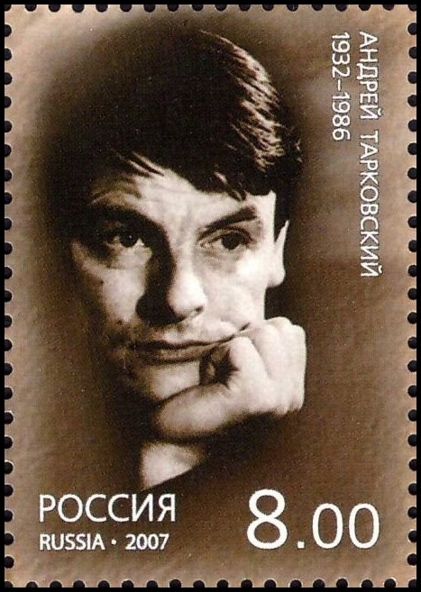

Ödüller FIPRESCI Ödülü (Kurban)
39.Cannes Film Festivali 1986 Büyük Jüri Ödülü (Kurban)
39.Cannes Film Festivali 1986 FIPRESCI Ödülü (Nostalji)
36.Cannes Film Festivali 1983
Ödüller En İyi Film (Spartacus)
18.Altın Küre Ödülleri 1961
"Nouvelle Vague" (Yeni Dalga),
geleneksel Fransa sinema trendinden farklı bir sinema biçimini kullanan,
belli bir fikir üzerinde birleşip buna göre film çeken genç bir yönetmen grubunun oluşturduğu bir akımdır.
Yeni Dalga içinde sayılabilecek yönetmenler Jean-Luc Godard, François Truffaut, Jacques Rivette, Eric Rohmer ve Claude Chabrol'dür.
1959 yılında eşzamanlı olarak çektikleri filmlerde verdikleri mesaj aynıdır:
"Herkes film yönetmeni olabilir."
1982: Cesar - En iyi yabancı film, The Elephant Man
1986: Los Angeles Film Critics Association - En iyi yönetmen, Blue Velvet
1986: National Society of Film Critics - En iyi yönetmen, Blue Velvet
1990: Cannes Film Festival - Palme d'Or, Wild at Heart
1991: American Film Institute - Franklin J. Schaffner Alumni Medal
1999: Avrupa Film Ödülü, The Straight Story